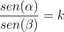

Trigonometria e Halos

Lei de Snell
A Lei de Snell diz que, quando um raio luminoso incide sobre uma superfície refratária, a relação entre o ângulo α, formado pelo raio incidente na reta normal, e o ângulo β, formado pelo raio refratado, é:

onde k é uma constante real associada ao índice de refração relativa entre um meio e o outro. Nesta revisão da Lei de Snell não consideramos as reflexões que sempre ocorrem na transição entre um meio e outro.
Em determinados ângulos não há refração alguma, apenas a reflexão total e, por isto, não veremos nos aplicativos ao lado a continuidade do raio emitido.
Instruções
Movimente o ponto azul para determinar o ângulo de incidência do raio luminoso;
Depois, clique no botão “Emitir Raio” e observe sua trajetória.
É possível emitir o raio tanto a partir do ar (parte de cima) como a partir da água (parte de baixo).
Nas próximas atividades, será utilizada a Lei de Snell para que se compreenda o fenômeno dos halos solares (ou lunares). Se você não tem familiaridade com essa lei e deseja entender melhor sua aplicação, é sugerível que acesse o software "Trigonometria e Raios Luminosos" antes de estudar as atividades seguintes.